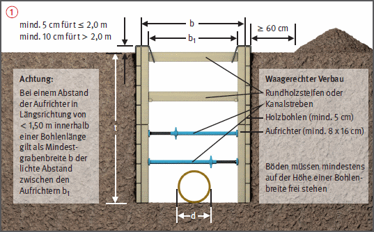
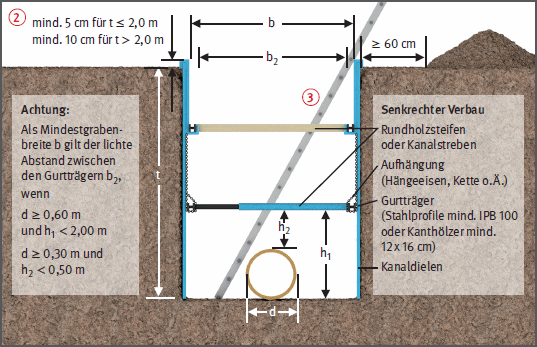

und senkrechter Verbau
und senkrechter Verbau  kann aus Holzbohlen oder Kanaldielen ausgebildet werden.
kann aus Holzbohlen oder Kanaldielen ausgebildet werden.- Grabentiefen bis 2,0 m mind. 5 cm betragen,
- Grabentiefen über 2,0 m mind. 10 cm betragen.
Verbaute Gräben – Waagerechter und Senkrechter Verbau |

und senkrechter Verbau kann aus Holzbohlen oder Kanaldielen ausgebildet werden.
 .
.07/2021